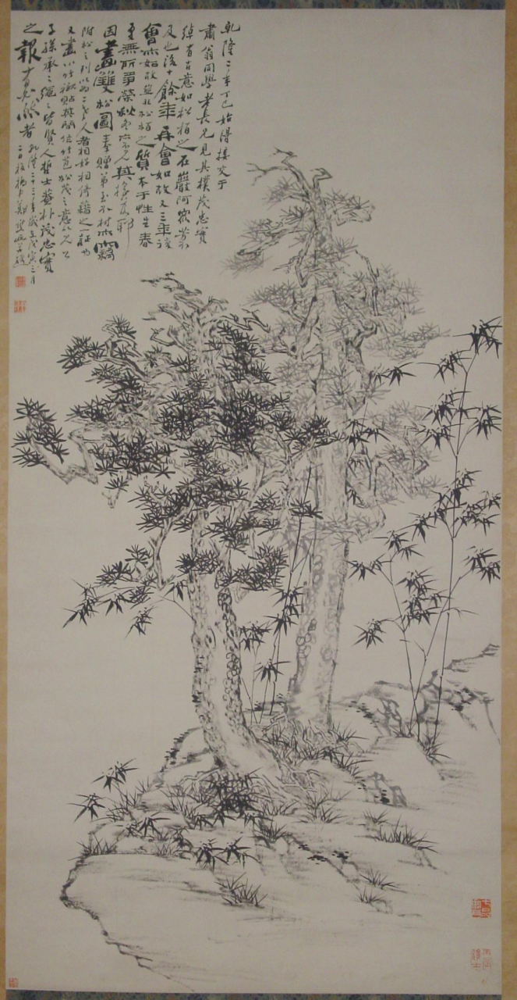
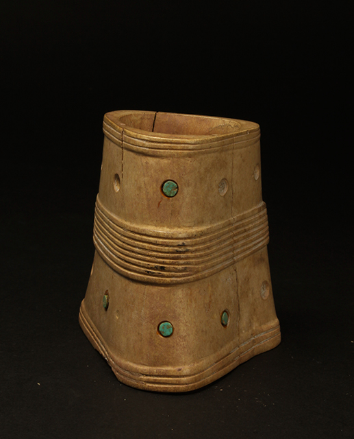
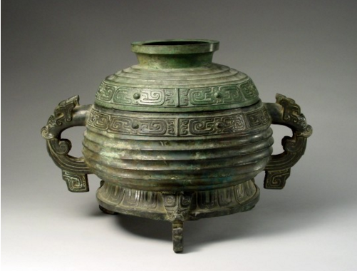

-
 明清时期官服补子
明清时期官服补子朝代 : 明清
类别 : 官服
作者：钟宁 -
吉祥“如意”
朝代 : 明清
类别 : 玉器
作者：钟宁 -
 四季花卉伴酒浓 依景诗文映酒香
四季花卉伴酒浓 依景诗文映酒香朝代 : 清朝
类别 : 瓷器
作者：钟宁 -
山东博物馆藏战国内衬毛底皮履
朝代 : 战国
类别 : 皮履
作者：钟宁 -
铜镜
朝代 : 汉朝
类别 : 镜
作者：钟宁 -
德化窑观音像
朝代 : 明朝
类别 : 观音像
作者：滕卫 -
九旒冕
朝代 : 汉朝
类别 : 冕冠
作者：滕卫 -
清高凤翰雪浪金星砚
朝代 : 清朝
类别 : 砚
作者：滕卫 -
清乾隆斗彩八宝云龙盖罐
朝代 : 清朝
类别 : 罐
作者：滕卫 -
清御题西湖十景诗集锦墨
朝代 : 清朝
类别 : 锦墨
作者：滕卫 -
兽面纹玉锛
朝代 : 新石器时代
类别 : 纹玉锛
作者：滕卫 -
新石器时代时代大汶口文化玉笄
朝代 : 新石器时代
类别 : 玉笄
作者：滕卫 -

郑夑《双松图》
朝代 : 清代
类别 : 图轴
作者：徐战 -
八角星纹彩陶豆
朝代 : 新石器时代
类别 : 彩陶
作者：王海玉 -
蛋壳黑陶高柄杯
朝代 : 新石器时代
类别 : 黑陶
作者：王海玉 -
丁公刻字陶片
朝代 : 新石器时代
类别 : 陶片
作者：王海玉 -
红陶兽形壶
朝代 : 新石器时代
类别 : 红陶
作者：王海玉 -

嵌绿松石骨雕筒
朝代 : 新石器时代
类别 : 骨雕筒
作者：王海玉 -
牙璧
朝代 : 新石器时代
类别 : 璧
作者：王海玉 -
北魏贾智渊造背屏三尊像
朝代 : 北魏
类别 : 佛像
作者：肖贵田 -
大汶口文化玉串饰
朝代 : 新石器时代
类别 : 饰
作者：肖贵田 -
东汉日月星象画像石
朝代 : 东汉
类别 : 画像石
作者：肖贵田 -
东魏蝉冠菩萨像
朝代 : 东魏
类别 : 菩萨像
作者：肖贵田 -
 秦泰山刻石
秦泰山刻石朝代 : 秦朝
类别 : 刻石
作者：肖贵田 -
 唐代天宝二年杨瓒造塔
唐代天宝二年杨瓒造塔朝代 : 唐朝
类别 : 塔
作者：肖贵田 -
近现代齐白石虾轴
朝代 : 近现代
类别 : 画轴
作者：孙洋 -
明嘉靖黄釉青花葫芦瓶
朝代 : 明朝
类别 : 葫芦瓶
作者：孙洋 -
明鲁王朱檀九旒冕
朝代 : 明朝
类别 : 冕
作者：孙洋 -
 齐六字刀币
齐六字刀币朝代 : 战国
类别 : 货币
作者：孙洋 -
清乾隆沉香狮子
朝代 : 清朝
类别 : 狮子
作者：孙洋 -
清郑燮双松图轴
朝代 : 清朝
类别 : 图轴
作者：孙洋 -
 宋无款葵花蛱蝶图卷
宋无款葵花蛱蝶图卷朝代 : 宋朝
类别 : 图卷
作者：孙洋 -
 温凉玉圭
温凉玉圭朝代 : 清朝
类别 : 玉圭
作者：孙洋 -
 “一刀平五千”金错刀
“一刀平五千”金错刀朝代 : 新朝
类别 : 刀
作者：孙洋 -
商举方鼎
朝代 : 商朝
类别 : 青铜器
作者：布明虎 -
 元钱选白莲图卷
元钱选白莲图卷朝代 : 元朝
类别 : 图卷
作者：孙洋 -

西周颂簋
朝代 : 西周
类别 : 盛食器
作者：布明虎 -
 春秋瓠壶
春秋瓠壶朝代 : 春秋
类别 : 壶
作者：布明虎 -
东汉元和四年铜壶
朝代 : 东汉
类别 : 铜壶
作者：布明虎 -
 汉代铜井
汉代铜井朝代 : 汉朝
类别 : 铜井
作者：布明虎 -
 唐金银平脱镜
唐金银平脱镜朝代 : 唐朝
类别 : 镜
作者：布明虎 -
 金代铜镜
金代铜镜朝代 : 金朝
类别 : 镜
作者：布明虎 -
清五岳真形图方炉
朝代 : 清朝
类别 : 方炉
作者：布明虎 -
清 “宣德款”铜炉
朝代 : 清朝
类别 : 铜炉
作者：布明虎 -
清太平有象尊和熏炉
朝代 : 清朝
类别 : 熏炉
作者：布明虎